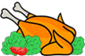

This example shows the most basic configuration in which you set only the path to the image to animate, and use all the default values for the other options.
This example demonstrates how you can customize the animation passing other options to the initialization method. In this case, the speed of the animation has been set to 3000 milliseconds (3 seconds), and there is a random pause between two animations.
This example is quite different from the previous in the behavior. In fact, the animation starts once the user
clicks the button reading "Run animation" and will show only one puff because of the repeat
option set to 1. In addition, the animated image will be scaled up by a factor of two and it'll start from
the top-left corner of the chicken.
This example shows how you can start the animation selecting not only by id but also using other selectors like the class selector. In this case, the settings will be applied to all the elements in the retrieved set but then the effect can be disabled, enabled, or destroyed on a subset of the initialize set without affecting the others.
In addition, this example shows how you can toggle the animation every time an event is triggered. Specifically, the animation of the box on the left will be disabled or enabled each time the button reading "Toggle Animation" is clicked. The animation will be enabled or disabled depending on its previous status.
Plugin created by Aurelio De Rosa (@AurelioDeRosa).